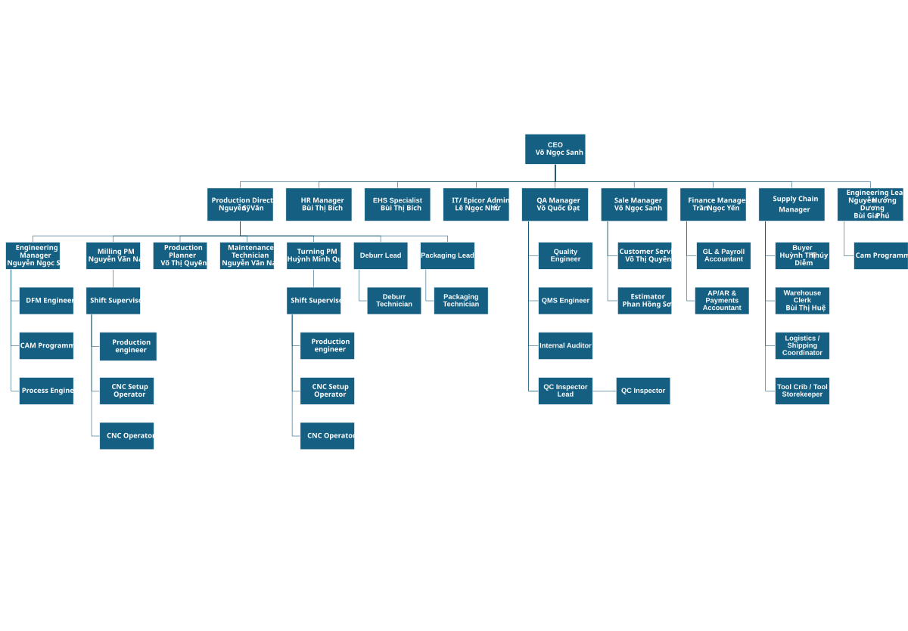

Tài liệu này là điểm vào tổ chức-level để Người đọc thấy toàn bộ hệ thống theo nhóm sản phẩm vai trò, tuyến báo cáo và giao điểm liên phòng ban. Annex này không chỉ là sơ đồ; nó còn chỉ ra Người đọc nên mở sổ tay, JD và ma trận nào để hiểu đúng ranh giới quyết định.

| nhóm sản phẩm | Phạm vi vai trò | Nguồn chuẩn kế tiếp | Quyết định / đầu ra chính | Bàn giao điển hình |
|---|---|---|---|---|
| Điều hành / doanh nghiệp quản trị | Tổng / Chung Manager, top quản lý, sản xuất lãnh đạo, chiến lược người chịu trách nhiệm | QMS Sổ tay | Doanh nghiệp ưu tiên, nguồn lực phân bổ, chiến lược escalation, xem xét của lãnh đạo | All chức năng via QMS Sổ tay, Ma trận thẩm quyền, Xem xét của lãnh đạo |
| D-PROD | Phân xưởng, shift, setup, Operator, vệ sinh và đóng gói, bảo trì giao diện | D-PROD | Mức sẵn sàng, điều phối xuất hàng thực thi, cell control, bất thường phản hồi, đầu ra độ ổn định | D-ENG·D-QUAL·D-SCM |
| D-ENG | DFM, quy trình kỹ thuật, CAM/NC, phát hành kỹ thuật | D-ENG | Kỹ thuật tính khả thi, bộ hồ sơ phát hành, lộ trình gia công, NC/cấu hình control | D-SCS·CS·D-PROD·D-QUAL |
| D-QUAL | QA / QMS, QC, đánh giá, phát hành quản trị | D-QUAL | Hold/phát hành, kiểm tra quản trị, NCR/CAPA, đánh giá, bộ hồ sơ giao hàng (ship gói hồ sơ) tính toàn vẹn | Sản xuất, Kỹ thuật, SCM, Xem xét của lãnh đạo |
| D-SCM | Mua hàng, kho, nhận hàng, hậu cần | D-LOG | Supplier truyền đạt yêu cầu, nhận hàng, lot/cert control, lô giao hàng chuẩn bị | D-QUAL/D-FIN/D-SCS/CS |
| D-SCS | Customer giao diện, RFQ, đơn hàng xác nhận / biên nhận, khiếu nại phối hợp | D-SCS | Thương mại cam kết, rà soát hợp đồng, khách hàng truyền đạt / giao tiếp | D-ENG·D-PPC·D-QUAL |
| D-FIN | AR/AP, lập hóa đơn, job kết thúc / đóng, tiền mặt control | D-FIN | Hóa đơn phát hành, tính giá thành kết thúc / đóng, SoD for tài chính giao dịch | D-SCS·CS·SCM·D-ERP |
| D-HR | Tuyển dụng, đào tạo quản trị, năng lực, lực lượng lao động hồ sơ | D-HR | số nhân sự mức sẵn sàng, năng lực mức sẵn sàng, chứng nhận quản trị / hành chính | PD/ENGM/QA[QMR]/SCM/FIN/HR/EHS/ITA/QA/D-EHS |
| D-EHS | Sự cố, công việc môi trường, mối nguy control, tuân thủ | D-EHS | Sự cố phản hồi, công việc-môi trường giám sát, phòng ngừa hành động | D-PROD·D-HR·QA |
| D-IT/D-ERP | IT admin, Epicor admin, số hóa người chịu trách nhiệm | D-IT | Truy cập, thay đổi, dự phòng, system-of-hồ sơ and tích hợp quản trị | D-SCS/D-ENG/D-PROD/D-QUAL/D-SCM/D-FIN/D-HR/D-EHS/D-IT/D-ERP |
| Giao điểm | Câu hỏi phải trả lời | Nguồn chuẩn |
|---|---|---|
| Kinh doanh/CS ↔ Kỹ thuật | Đã khóa yêu cầu, giả định, tính khả thi và phiên bản chưa? | D-SCS • D-ENG • ANNEX-120 — Thẩm quyền Matrix |
| Kỹ thuật ↔ Sản xuất | Bộ phát hành đã đủ lộ trình gia công/program/tooling/mức sẵn sàng chưa? | D-ENG • D-PROD |
| Sản xuất ↔ Quality | Điểm hold/phê duyệt, bất thường phản ứng và bằng chứng đã rõ chưa? | D-QUAL • RACI |
| Chuỗi cung ứng ↔ Quality ↔ Finance | Nguyên vật liệu / cert / ship / hóa đơn đã đối soát chưa? | D-SCM • D-FIN • ANNEX-115 |
| HR ↔ FUNC_HEADS ↔ QA | Lộ trình, OJT, chứng nhận, phạm vi bao phủ phó đã cập nhật chưa? | Training Academy • Phó Matrix • Chứng nhận Sổ đăng ký |
| IT / Epicor ↔ chủ nghiệp vụ | Quyền, field sơ đồ ánh xạ, dự phòng và source-of-hồ sơ đã thống nhất chưa? | ANNEX-101 • ANNEX-115 • ANNEX-118 |